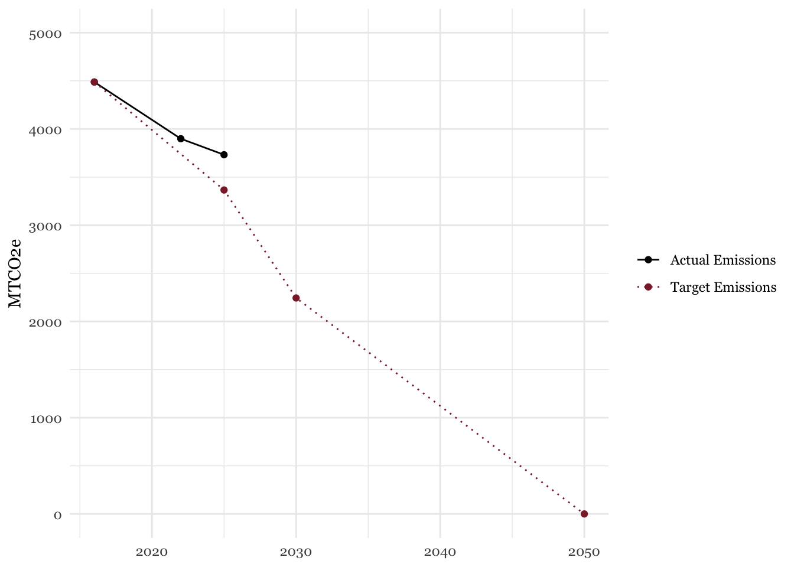

2 Municipal Overview
2.1 Progress to Date
The Town of Amherst Municipality was responsible for 4,488 Metric Tons of CO2 Equivalent emissions in FY 2016. In FY 2025, this number was 3,732. This represents a 16.8% decrease in municipal emissions relative to the 2016 baseline, which fell short of the Town’s 25% emissions reduction goal for 2025. Fortunately, the Town currently has major, net-zero emission, construction and renovation projects underway that will bring municipal emissions much closer to these targets upon their completion. These projects will be discussed later in this report.
| Inventory Year | Total MTCO2e | Percent Reduction |
|---|---|---|
| FY 2016 | 4,488 | 0.0% |
| FY 2022 | 3,898 | -13.1% |
| FY 2025 | 3,732 | -16.8% |
Note: Previous inventories reported 4,389 and 3,852 MTCO2e for FY 2016 and FY 2022, respectively. These numbers were updated to reflect the latest data sources and methodologies.
2.2 Emissions by Sector
Municipal emissions fall into two categories: stationary energy and transportation. Stationary energy accounted for 74% of total emissions in 2025, up from 69% in 2022.
2.3 Emissions by Fuel Type
The composition of fuel usage has changed over time within the municipality. Most notably, electricity has seen an increased share of total emissions, while the relative shares of gasoline and diesel have decreased. This is consistent with the Town’s move toward more renewable energy sources.
| Fuel Type | Units | FY 2016 | FY 2022 | FY 2025 | Change Since 2016 | Change Since 2022 |
|---|---|---|---|---|---|---|
| Transportation | ||||||
| Diesel | Gallons | 49,278.0 | 43,582.0 | 37,403.0 | −24.1% | −14.2% |
| Gasoline | Gallons | 79,926.0 | 85,325.0 | 64,641.0 | −19.1% | −24.2% |
| Buildings & Stationary Infrastructure | ||||||
| Electric | MWh | 12,795.6 | 11,348.7 | 12,483.7 | −2.4% | 10.0% |
| Gas | Therms | 212,624.0 | 216,662.0 | 224,104.0 | 5.4% | 3.4% |
| Oil | Gallons | 79,309.0 | 65,450.0 | 61,138.0 | −22.9% | −6.6% |
| Propane | Gallons | 1,654.0 | 1,017.0 | 1,062.0 | −35.8% | 4.4% |